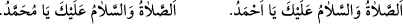
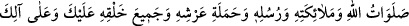
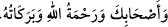

“Allâh’ın salât ve selamı senin üzerine olsun ey Allâh’ın Rasulü! Allâh’ın salât ve
selamı senin üzerine olsun ey Allâh’ın sevgilisi! Allâh’ın salât ve selamı senin
üzerine olsun ey Allâh’ın dostu! Allâh’ın salât ve selamı senin üzerine olsun ey
Allâh’ın seçkin kulu! Allâh’ın salât ve selamı senin üzerine olsun ey Allâh’ın sırdaşı!
Allâh’ın salât ve selamı senin üzerine olsun ey Allâh’ın yarattıklarının en hayırlısı!
Allâh’ın salât ve selamı senin üzerine olsun ey Allâh’ın seçip tercih ettiği! Allâh’ın
salât ve selamı senin üzerine olsun ey Allâh’ın süslediği! Allâh’ın salât ve selamı
senin üzerine olsun ey Allâh’ın gönderdiği! Allâh’ın salât ve selamı senin üzerine
olsun ey Allâh’ın şereflendirdiği! Allâh’ın salât ve selamı senin üzerine olsun ey
Allâh’ın yücelttiği! Allâh’ın salât ve selamı senin üzerine olsun ey Allâh’ın mükerrem
kıldığı! Allâh’ın salât ve selamı senin üzerine olsun ey Allâh’ın peygamberlerin
efendisi! Allâh’ın salât ve selamı senin üzerine olsun ey Allâh’ın müttakîlerin imâmı!
Allâh’ın salât ve selamı senin üzerine olsun ey Allâh’ın peygamberlerin sonuncusu!
Allâh’ın salât ve selamı senin üzerine olsun ey Allâh’ın günahkarların şefaatçisi!
Allâh’ın salât ve selâmı senin üzerine olsun ey âlemlerin Rabbi’nin Rasûlü/elçisi!
Allâh’ın salât ve selamı senin üzerine olsun ey evvelkilerin efendisi! Allâh’ın salât ve
selamı senin üzerine olsun ey sonrakilerin efendisi! Allâh’ın salât ve selamı senin
üzerine olsun ey peygamberlerin kumandanı! Allâh’ın salât ve selamı senin üzerine
olsun ey ümmetin şefaatçisi! Allâh’ın salât ve selamı senin üzerine olsun ey himmeti
yüce olan! Allâh’ın salât ve selamı senin üzerine olsun ey hamd sancağının hâmili!
Allâh’ın salât ve selamı senin üzerine olsun ey makam-ı mahmûdun sâhibi! Allâh’ın
salât ve selamı senin üzerine olsun ey Kevser havuzunun sâkîsi! Allâh’ın salât ve
selamı senin üzerine olsun ey kıyamet günü tâbileri en çok olan! Allâh’ın salât ve
selamı senin üzerine olsun ey Ademoğullarının efendisi! Allâh’ın salât ve selamı
senin üzerine olsun ey evvelkilerin ve sonrakilerin en değerlisi! Allâh’ın salât ve
selamı senin üzerine olsun ey müjdeci! Allâh’ın salât ve selamı senin üzerine olsun ey
uyarıcı! Allâh’ın salât ve selamı senin üzerine olsun ey Allâh’ın izniyle O’na dâvet
eden ve nur saçan kandil! Allâh’ın salât ve selamı senin üzerine olsun ey tevbe
peygamberi! Allâh’ın salât ve selamı senin üzerine olsun ey rahmet peygamberi!
Allâh’ın salât ve selamı senin üzerine olsun ey peygamberlerin izini süren (mukaffî)!
Allâh’ın salât ve selamı senin üzerine olsun ey peygamberlerin ardından gelen (âkıb)!
Allâh’ın salât ve selamı senin üzerine olsun ey hâşir (toplayan)! Allâh’ın salât ve
selamı senin üzerine olsun ey seçilmiş (muhtâr)! Allâh’ın salât ve selamı senin
üzerine olsun ey (şirki ve küfrü) yok eden (mâhî)! Allâh’ın salât ve selamı senin
üzerine olsun ey Ahmed! Allâh’ın salât ve selamı senin üzerine olsun ey Muhammed!